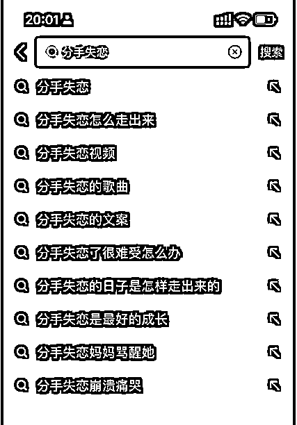
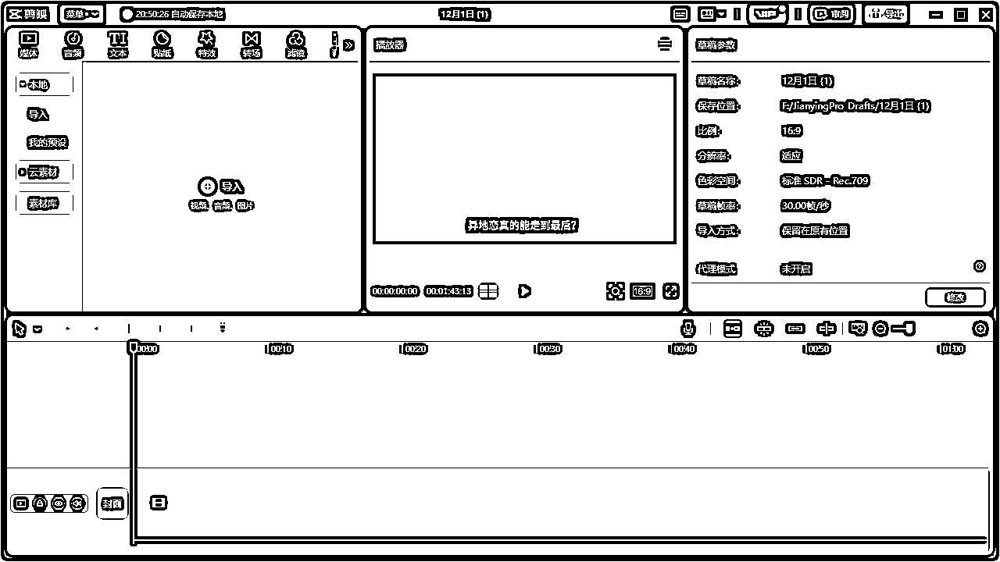

来源：https://p9z0j9usen.feishu.cn/docx/DBRpdzwKdosYiJx4AIZcreAfnjb
见贴欢喜。大家好，我是挽心，这是我从事婚恋流量变现的第四年，也是我做自媒体创业的第一年，希望能真诚分享写一些有价值的文章结识更多圈友，实现破圈。
今天给大家分享一下，今日话题赛道的和婚恋流量结合的玩法。希望可以给大家做流量变现或者情感流量的圈友提供一个新的思路。
通过通过抖音、小红书等平台发布情感类作品，吸引需求用户找你咨询，然后你将需求用户推到情感咨询师的微信上，次日结算。情感流量出售的单价一般是在40—100左右，根据数量，质量，类型来定价。
就我们目前50一条的单价结算，每月200条流量即可轻松收入1w＋
今天给大家分享一下我常用的几种选题方法，选题的精准度决定了流量爆发的程度，所以想要出爆款视频，一个好的选题必不可少。今天给大家分享一下超实用的10种抖音短视频选题方法，选题的精准度直接决定了流量的爆发程度，所以想要自己的账号成为爆款，短视频爆流量，那么正确的短视频内容选题必不可少。
分析账号覆盖用户的痛点，结合用户痛点打造视频内容。用户需要什么就生产什么，用户缺什么就给什么。
比如：
给失恋的人贩卖焦虑的选题：
失恋了怎么熬过去？恋爱技巧、失去一个人会后悔吗？失恋是什么感觉？

给想复合的人选题的方向：
挽回前任的真诚句子、可以复合的文案、如何挽回一段感情？
围绕目标客户群的痛点去挖掘需求，打造需求就行了。这里除了靠常识分析以外，还可以利用工具去判断用户的需求体现。比如百度、抖音、视频号等都能分析用户需求
第一步：确定账号所属行业核心关键词
通过对账号定位、产品定位、用户需求、搜索热点就能拓展很多核心关键词。
例如：如果账号是婚恋行业
那么核心关键词：复合、挽回、分手、情感挽回、复合文案、挽回方法、挽回避坑
第二步：搜索相关热门话题
用核心关键词进行拓展搜索就行了。可以利用抖音、视频号、百度等平台进行用户需求判断。
第三步：筛选关键词打造主题内容
利用EXCEL表将筛选、拓展的关键词进行分类。按照核心关键词、人群词、产品词、价格词、疑问词、通用词进行细分。然后结合关键词打造内容主题。
比如人群词：挽回女友
视频标题：想挽回女友，必须要掌握的五个复合方法，快来码住！
很多时候我们要多关注不同平台，了解最近网友对什么类型的题材感兴趣，高播放量、热门的视频内容。可以将其他平台同行业的爆款选题作为参考，策划属于自己的视频内容。
比如：视频号、小红书视频、快手短视频、哔哩哔哩等。
提醒：内容仅供参考，不能直接搬运。
市面上短视频数据分析工具很多，可以综合起来使用，结合综合数据进行选题。因为每个平台的数据更新时间可能有一些差异，所以需要综合使用。
常用的抖音数据分析工具：蝉妈妈、灰豚、飞瓜数据
全方位解读抖音热点数据，助力创作者更好洞察热点趋势，参与热点内容创作，获取更多优质流量。
来源：抖音热点宝功能截图
抖音热点宝属于官方提供的工具，数据精准，只需要按照行业分类，精准筛选就能找到最新热点话题及数据指标。
抖音官方提供的工具，进入抖音APP搜索框检索关键词“创作灵感”，就能寻找到入口。里面有很多热点话题，找到情感心理板块
养号的过程中多收藏点赞对标账号，将对标账号的爆款视频当做自己的选题。
示例：https://v.douyin.com/iRcctgmu/ 5@1.com
确定选题以后接下来我们需要选择文案，为了去重，我们尽量选择两个以上的文案进行拼接。
以异地恋为例
①确定选题
②选择爆款视频
③提取文案
④文案去重
确定好文案以后，直接给文案配音，文案配音有两种常用的方式。
打开剪映，选择图文成片，复制文案进去，选择使用本地素材，即可生成配音

因为我用的是配音pro，所以今天就分享一下配音神器pro的用法
https://api.peiyinshenqi.club/u/G7ScP 打开配音pro，复制文案进去，这里需要断一下句，选择合适的音色，生成配音，下载为MP3，添加剪映里面制作视频画面。

咱们配音制作完成以后就可以来制作视频画面了，接下来给大家介绍一下常见的几种视频制作方式。
因为咱们的玩法与小说推文类似，所以可以直接去淘宝买资源，游戏或者解压视频都可以。保证配音和视频素材时长一致就行，但是毕竟是情感类视频，画面建议使用质量高一点的符合情景的。
有条件的可以充值一个剪映的会员，直接使用剪映自带的图文成片，选择智能匹配表情包功能。
没条件的咱们接着往下看，pxx直接买素材大全，多准备一些表情包，我给大家也准备了4.2w个表情包自取https://pan.baidu.com/s/1z1kxJc8kQw4btlNedKGm3Q?pwd=bq1c
还不行就直接使用抖音自己的表情包贴纸啦，基本上就可以满足日常需求了。
下载动漫视频或者是风格统一的风景视频，利用工具切割成5秒左右的短视频，一般一小时左右的视频可以切割成700个小视频。

需要时直接随机拖几个视频放到剪映，可以完美的解决去重问题。
大家平时在抖音肯定刷到过这种视频， 是不是在想，这种动漫的视频都是在哪里找的，为什么文案和画面能这么匹配？
其实这种视频都是自己在画世界app根据文案自己手绘出来的。下面附带教程给到大家。
最后直接将画出来的图片拼接起来就可以组成视频了。这种方式是效果最好最容易出爆款的方式，但是弊端就是制作时间长，投产比合适的话可以尝试找一些画图的兼职，一个作品10块钱左右。技术大佬也可以尝试与ai绘画结合。
做下场做之前最起码要了解到不少于一种的变现渠道，做流量主要知道流量主的玩法，做婚恋流量要有稳定的后端渠道。不然流量再好，没有变现一切都是白搭。后期做上手了可以把几种变现方式相结合做到一鱼多吃。
做账号一定是一个长久的事情，从养号开始最好就做好规划，养号时多关注同行，找对标，收藏音乐。如果没有网感就需要多看多练，用全新的账号去做会比用老账号数据好的多。虽然这个赛道容易出百万爆款，但是也不建议企图一两天就出爆款的最好别下场。
主要是涉及到情感， 所以作品的质量不要太粗制滥造，不然看到难看的敷衍的画面，再火的视频也难引起别人的共鸣。所以尽量选合适的声音和合适的画面，也可以适当的加上背景音乐。一天不用发太多，一个账号一天一个作品即可。
今天的分享就到这里啦。其实总的来说，今日头条玩法只不过是内容的一个展现形式而已，选择一个好的变现方式和赛道才是最重要的。我希望我的这些见解和经验能够为正在此路上努力的朋友们提供至少一丝启发。如果这些内容能为您带来实质性的帮助，那将是我的荣幸。
这是我往期的文章，附上链接感兴趣的圈友可以阅读了解一下我~
1.《情感粉引流介绍》
2.《情感赛道，单月变现5万+全流程复盘》
3.《婚恋流量矩阵变现，学员四个月变现8w＋经验分享》
我非常欢迎那些感兴趣或已经在这条路上的朋友们与我联系。分享不仅是学习的过程，也是连接彼此的桥梁。让我们一起交流经验，互相学习，共同成长。
越分享越幸运。我是挽心，祝愿大家在追求财富的路上，技艺精进，做大做强。